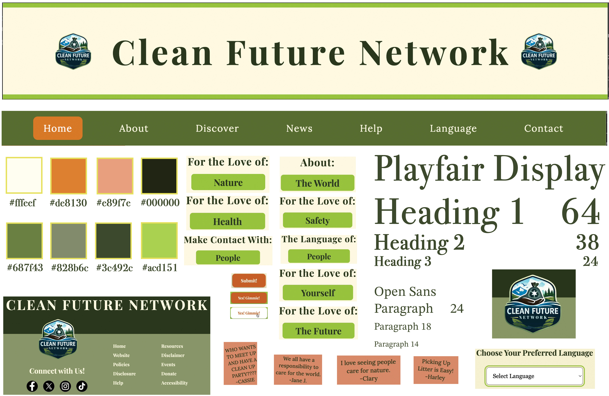
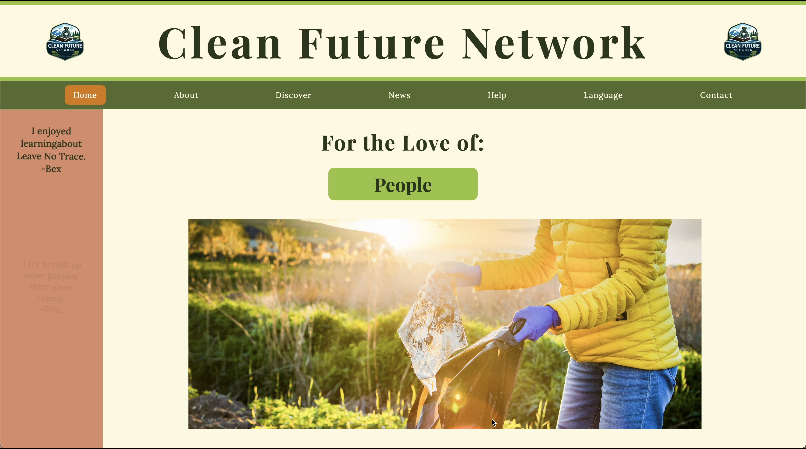

SOFTWARE
Figma
Adobe Photoshop
Adobe Dreamweaver
MY ROLE
Product Designer-Independent Project
UI/UX Designer
Web Designer
DELIVERABLES
Brand Identity Development
Logo Design
Website Design
UI/UX Design
Interactive Prototyping
TOOLS & CREDITS
Envato Elements (licensed subscription assets & mockups)
PROJECT OVERVIEW
Clean Future Network is a conceptual nonprofit brand and website design project created to explore how visual identity and digital experiences can support environmental organizations.
The goal was to develop a website experience that communicates the organization’s mission clearly while balancing environmental education with an engaging and welcoming visual identity. The project explored how layout, imagery, typography, and interactive elements can transform important information into an experience that encourages awareness and action.
Clean Future Network logo and vidual identity.

Core elements of the visual design system.
CREATIVE DIRECTION
The visual direction combines natural imagery, warm earth tones, and structured content sections to create a design that feels both trustworthy and community-focused. A palette of greens, creams, and natural accent colors was used to reinforce themes of sustainability, while bold typography and photography help guide users through the organization’s message.
The website structure was designed around storytelling and accessibility, using clear navigation, informational cards, interactive sections, and visual hierarchy to make environmental topics easier to understand. Each page was developed to encourage exploration while creating a consistent digital identity that supports Clean Future Network’s mission of protecting communities and the environment.
PROCESS
The process began with defining the purpose of Clean Future Network as a global community resource focused on helping individuals protect and restore natural spaces. Inspired by organizations such as Leave No Trace, the goal was to create a website that combined education, current information, and opportunities for community involvement into one accessible platform.
Research and planning focused on balancing different types of content with varying update cycles. The website needed to provide evergreen educational resources, such as environmental guidelines and responsible outdoor practices, while also supporting frequently changing content including environmental news, local cleanup events, and community opportunities. A robust language section was incorporated into the structure to support the goal of making environmental action accessible to a worldwide audience.
The visual direction was developed around a natural color palette of greens and earth tones to reinforce the connection between the digital experience and the environment. During research, I explored existing community-focused websites and identified engagement patterns that could encourage connection and participation. This inspired the integration of rotating community messages on the homepage, creating a sense of shared responsibility and highlighting the voices of individuals working toward a cleaner future.
The final design combines educational resources, community engagement, and accessible navigation to create a platform designed to inform, inspire, and encourage collective environmental action.

Clean Future Network Storyboard.
GALLERY

View Interactive PrototypeExplore the Clean Future Network through an interactive high-fidelity prototype designed to bring the complete user experience to life. Click through the pages to experience the website's navigation.

Discover page showing content structure.

High-fidelity Figma mockup of the Help page.

Clean Future Network high-fidelity Figma prototype screens for the Language and Contact pages.

Clean Future Network website high-fidelity mockup.
Your mission deserves a visual identity that connects.
CONTACT ME